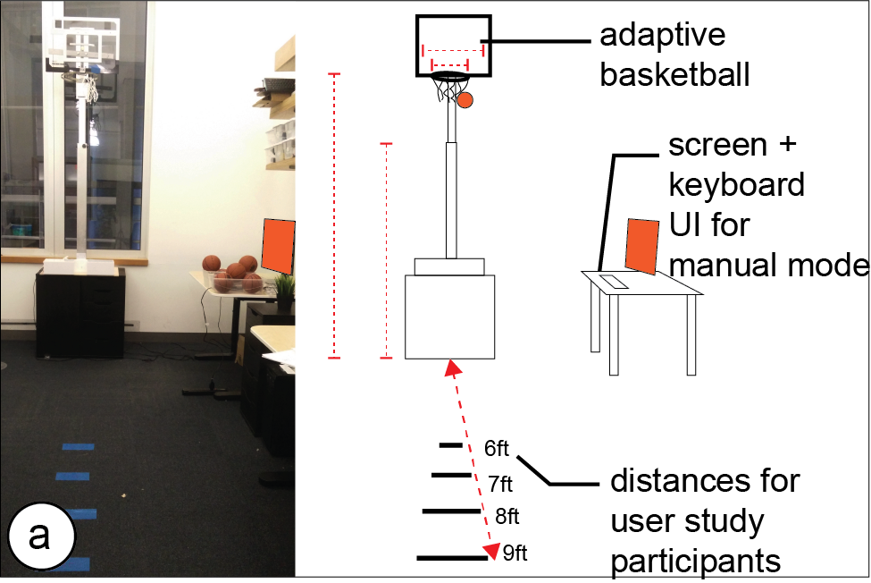
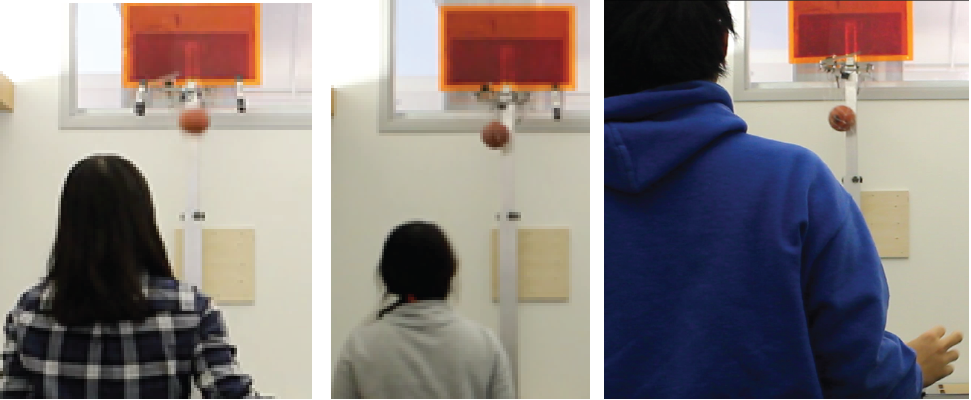
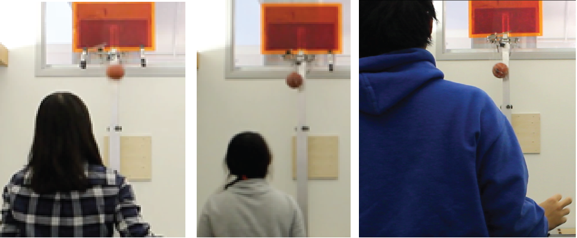
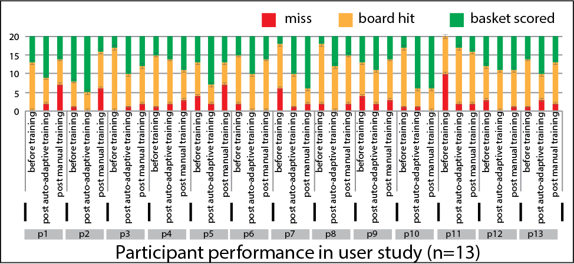
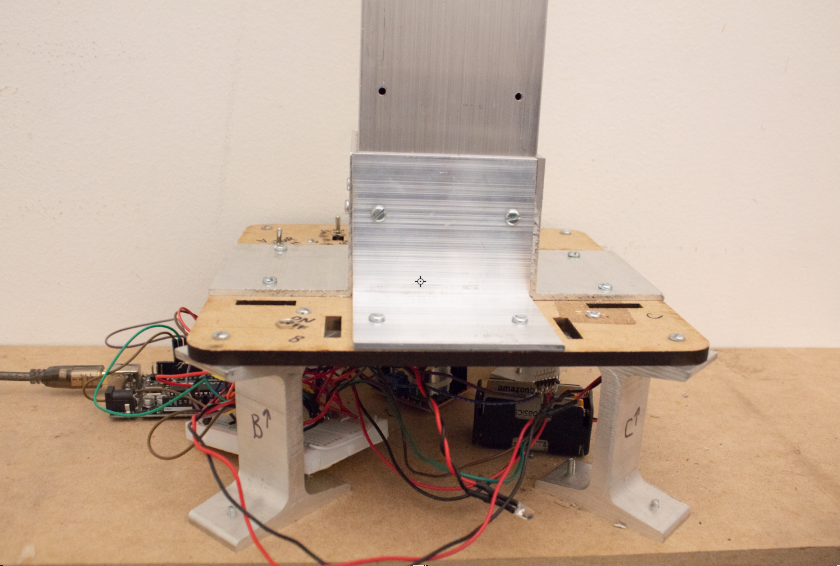

Team 0:
Dishita Turakhia, Lotta Blumberg

Adaptive Basketball
When learning how to score baskets in basketball, beginner-level learners often train with basketball stands that are height-adjustable since a lower basket is easier to score. Learners can manually raise or lower the stand to increase or decrease difficulty. To be able to vary the task difficulty under computer-control, our adaptive basketball setup has a motor in the base that can raise and lower the stand based on input from a micro-controller. To give the prototype an additional dimension for adaptation, we also made the hoop adjustable, i.e., the hoop can widen and tighten using a second motor.Sensors


To be able to determine how learners perform, the basketball stand has two sensors: a piezo sensor on the board to detect hits on the board, and a switch on the net that gets pulled when the ball falls through to detect scored baskets. All sensors and actuators are connected to a micro-controller (Arduino Uno) included in the base.
Actuators

To be able to vary the task difficulty under computer-control, our adaptive basketball setup has a motor in the base that can raise and lower the stand based on input from a micro-controller. To give the prototype an additional dimension for adaptation, we also made the hoop adjustable, i.e., the hoop can widen and tighten using a second motor.


User Study



We are still deciding how detailed this should be for you and let you know next week
Participants attempted 80 throws with both the adaptive basketball and a static setup but were randomly assigned an order. In the adaptive setup, participants started by throwing balls in the easiest setting (lowest basket height and largest hoop size) and gradually progressed to the harder settings (using an early version of our adaptation algorithm). In the static setup, participant attempted 40 throws for the easiest setting (i.e., largest hoop, lowest basket height) and then another 40 throws for the hardest setting (i.e., the smallest hoop and the highest basket height). At the beginning of the study and after each condition, we tested participants’ current skill level by asking them to attempt 20 throws in the hardest setup. At the end of the study, we collected qualitative feedback asking participants to compare their experience with the static setup to their experience with the adaptive setup.
Participants attempted 80 throws with both the adaptive basketball and a static setup but were randomly assigned an order. In the adaptive setup, participants started by throwing balls in the easiest setting (lowest basket height and largest hoop size) and gradually progressed to the harder settings (using an early version of our adaptation algorithm). In the static setup, participant attempted 40 throws for the easiest setting (i.e., largest hoop, lowest basket height) and then another 40 throws for the hardest setting (i.e., the smallest hoop and the highest basket height). At the beginning of the study and after each condition, we tested participants’ current skill level by asking them to attempt 20 throws in the hardest setup. At the end of the study, we collected qualitative feedback asking participants to compare their experience with the static setup to their experience with the adaptive setup.

Implementation Challenges

Here we provide some extra pictures of the underlying hardware and describe some of our implementation challenges.
Here we provide some extra pictures of the underlying hardware and describe some of our implementation challenges.
Here we provide some extra pictures of the underlying hardware and describe some of our implementation challenges.
Milestone Videos
Milestone #1
Milestone #2
Milestone #3
Milestone #4
Milestone #5
Milestone #6
Presentations
Midterm Presentation Final Presentation
Files
Arduino Code: basketball.ino Rhino3D code: adapt3D.zip